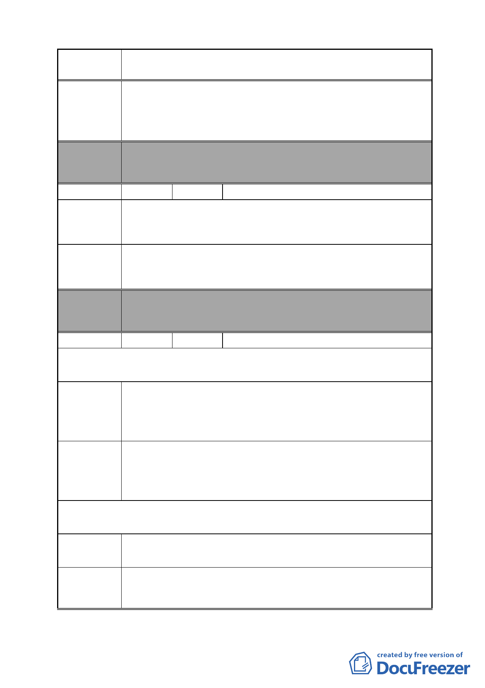

案 名 變更臺北市南港區鐵路地下化沿線土地主要計畫案
建議辦法
委員會
決議
1.將來若需拆屋及搬遷，市府提供中繼住宅安置，並居住至分
回土地、地上物新建完成為止。
2.本區開發後續需告知居民權利，與居民利益有關者，應經過
本區居民同意，並予居民充分瞭解參與意見之機會。
本案除文字誤繕應再作修正外，其餘依市府本次會議所送修
正計畫書內容通過。
編號
陳情理由
建議辦法
委員會
決議
29 陳情人 林敬賀
陳情地點 D 區
1.同意此計畫。
2.此次展覽說明會僅從報紙得知，聯絡通知管道太少。
1.需建立一個聯絡與說明窗口。
2.需教育與讓居民瞭解重劃與未來發展與選項。
3.整個發展與推行計畫需透明、公開讓居民全程參與。
本案除文字誤繕應再作修正外，其餘依市府本次會議所送修
正計畫書內容通過。
編號
30 陳情人 陳建業
第 1 次陳情（97.11.25.）
陳情理由
建議辦法
陳情地點 D 區
1.本計畫案開發方式與內容，需充分說明與告知，更需經居民
同意。
2.若有拆遷之處理，應有居民同意之方式。
1.計畫案實施時程階段，應確實通知所有人（居民），並依階
段經居民同意，如說明公辦市地重劃方式，商業區通盤檢討
計畫案等規定之說明。
2.建議就原地安置及拆遷補助安置事項確認予居民。
第 2 次陳情（98.4.7.）
我本長居住於此，並無與計畫案衝突，為求居的人民基本
陳情理由 權利，明確表示，維持現狀。
反對參與重劃，排除於計畫外，堅持維持現狀。
建議辦法
- 39 -